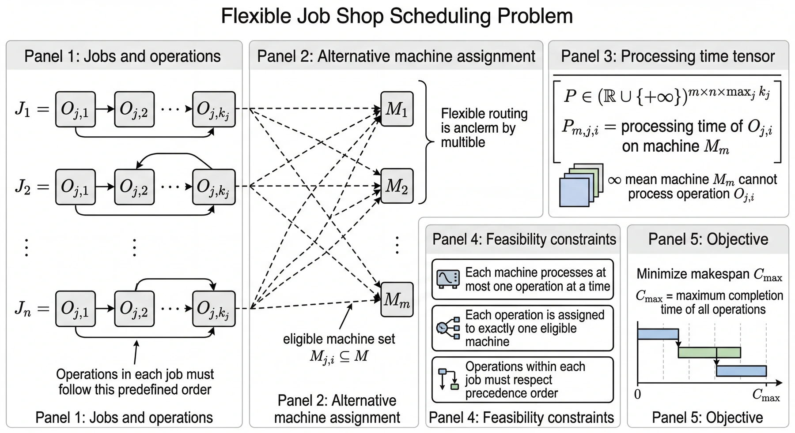
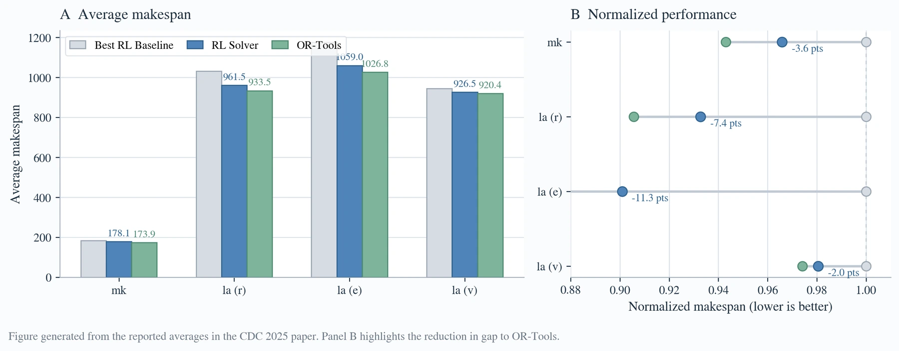

Research Project
RL Solver for FJSP
Reinforcement Learning for the Flexible Job Shop Scheduling Problem
A reinforcement learning solver for flexible job shop scheduling, aimed at improving solution quality, decision transparency, and computational efficiency.
Problem Formulation
In FJSP, each job contains an ordered sequence of operations, and each operation may be processed by multiple eligible machines. The solver must jointly decide operation sequencing and machine assignment, with the objective of minimizing the makespan.

RL Solver Framework
The current solver uses a problem-specific RL formulation together with an action-priority policy design. In the current paper, APDPO serves as one policy optimization module within this broader solver.

Experimental Snapshot
On representative benchmark groups from the Brandimarte and Hurink families, the reported results show that the solver outperforms existing RL baselines and moves closer to OR-Tools.

Table 1. Average makespan comparison summarized from Table I of the CDC 2025 paper.
| Benchmark | Best RL Baseline | RL Solver | OR-Tools |
|---|---|---|---|
| mk | 184.40 | 178.10 | 173.90 |
| la (rdata) | 1030.83 | 961.53 | 933.53 |
| la (edata) | 1175.53 | 1059.05 | 1026.80 |
| la (vdata) | 944.85 | 926.45 | 920.40 |
Related Papers
- Action-Priority Driven Policy Optimization for Flexible Job Shop Scheduling Problem
- Action-Priority Driven Policy Optimization via Gradient-Free Updates for Flexible Job Shop Problem (under review)
- WARP-RL: Instance-Space Warping Reinforcement Learning for Flexible Job Shop Scheduling (under review)